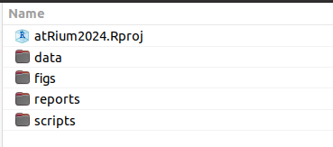

[1] 10[1] 4[1] 5[1] 9[1] 3Part 1
1.) Introduction - code along
2.) Syntax and basic functions
3.) Workflow
[1] 10[1] 15[1] 2101.) create one vector which contains 10 numbers from 51 to 60
2.) and another vector which contains 10 numbers from 101 to 110
3.) save the first vector as “vect_1” and second as “vect_2”
4.) subtract vect_1 from vect_2 and save the results as “vect_sub”
()function_name(argument1 = value1, argument2 = value2, ...)
[1] 1000 1010 1020 1030 1040 1050 1060 1070 1080 1090 1100 1110 1120 1130 1140
[16] 1150 1160 1170 1180 1190 1200 1210 1220 1230 1240 1250 1260 1270 1280 1290
[31] 1300 1310 1320 1330 1340 1350 1360 1370 1380 1390 1400 1410 1420 1430 1440
[46] 1450 1460 1470 1480 1490 1500 1510 1520 1530 1540 1550 1560 1570 1580 1590
[61] 1600 1610 1620 1630 1640 1650 1660 1670 1680 1690 1700 1710 1720 1730 1740
[76] 1750 1760 1770 1780 1790 1800 1810 1820 1830 1840 1850 1860 1870 1880 1890
[91] 1900 1910 1920 1930 1940 1950 1960 1970 1980 1990 2000[1] 101[1] 1000 2000str() will quickly tell you what kind of object with what kind of values you have [1] 1 2 3 4 5 6 7 8 9 10 [1] 101 102 103 104 105 106 107 108 109 110 int [1:10] 101 102 103 104 105 106 107 108 109 110 [1] "a" "b" "c" "d" "e" "f" "g" "h" "i" "j" chr [1:10] "a" "b" "c" "d" "e" "f" "g" "h" "i" "j" chr [1:5] "Berlin" "Bratislava" "Prague" "Vienna" "Warsaw"If the vector combines numbers and words, the result will save the numbers as characters, so it is then not possible to make mathematical operations with them
cbind() binds vectors into columns and then as.data.frame() change them into dataframeGet the basic information about the dataframe with str()
'data.frame': 10 obs. of 3 variables:
$ nums : chr "1" "2" "3" "4" ...
$ hunds: chr "101" "102" "103" "104" ...
$ letts: chr "a" "b" "c" "d" ...We see that columns nums and hunds are not numbers, but characters. To be able for us to do mathematic operations, we need to change the values into numbers by function as.numeric()
[,]name_of_your_dataframe[row_number,column_number]
First row
First column
$Copy, paste and run this whole code chunk:
first_name <- c("Margaux", "Lesley", "Carole", "Alexander", "Dita", "Brigit", "Sara", "Yiu-Kang", "Romane", "Nicky", "Mihailo", "Valeriia", "Carlo", "Panagiotis", "Juan Carlos", "Anna", "Swe Zin", "Ilenia")
country <- c("Lithuania","Ireland","Germany","United Kingdom","Netherlands","Austria","Germany","Germany","Italy","United Kingdom","Serbia","Ukraine","Germany","Italy","France","United Kingdom","Switzerland ","Luxembourg")
position <- c("post_doc","researcher","post_doc","masters_student","post_doc","researcher","phd_student","researcher","phd_student","researcher","researcher","ba_student","post_doc","researcher","researcher","phd_student","phd_student","phd_student")
institution <- c("university","public_research_org","university","university","university","public_research_org","university","public_research_org","university","digital_repository","university","university","public_research_org","public_research_org","private_org","university","university","university")
city <- c("Vilnius","Dublin","Kiel","York","Leiden","Vienna","Kiel","Bochum","Padova","York","Belgrade","Odesa","Leibzig","Rome","Paris","Glasgow","Bern","Luxembourg")
distance_km <- c(850, 1650, 720, 1300, 910, 110, 720, 710, 550, 1300, 560, 1090, 380, 870, 1040, 1590, 720, 760)
df_people <- as.data.frame(cbind(first_name, country, position, institution, city, distance_km))
df_people$distance_km <- as.numeric(df_people$distance_km)
head(df_people, 4) first_name country position institution city
1 Margaux Lithuania post_doc university Vilnius
2 Lesley Ireland researcher public_research_org Dublin
3 Carole Germany post_doc university Kiel
4 Alexander United Kingdom masters_student university York
distance_km
1 850
2 1650
3 720
4 1300 [1] "Margaux" "Lesley" "Carole" "Alexander" "Dita"
[6] "Brigit" "Sara" "Yiu-Kang" "Romane" "Nicky"
[11] "Mihailo" "Valeriia" "Carlo" "Panagiotis" "Juan Carlos"
[16] "Anna" "Swe Zin" "Ilenia" [1] "Lithuania" "Ireland" "Germany" "United Kingdom"
[5] "Netherlands" "Austria" "Italy" "Serbia"
[9] "Ukraine" "France" "Switzerland " "Luxembourg"
Austria France Germany Ireland Italy
1 1 4 1 2
Lithuania Luxembourg Netherlands Serbia Switzerland
1 1 1 1 1
Ukraine United Kingdom
1 3 first_name country position institution city distance_km
7 Sara Germany phd_student university Kiel 720
9 Romane Italy phd_student university Padova 550
16 Anna United Kingdom phd_student university Glasgow 1590
17 Swe Zin Switzerland phd_student university Bern 720
18 Ilenia Luxembourg phd_student university Luxembourg 760Alternative - selecting specific columns
first_name position city
7 Sara phd_student Kiel
9 Romane phd_student Padova
16 Anna phd_student Glasgow
17 Swe Zin phd_student Bern
18 Ilenia phd_student LuxembourgUse the dataframe df_people to solve this questions:
Hints: names(), unique(), table(), mean(),[,]
Alternative:
[1] "university" "public_research_org" "digital_repository"
[4] "private_org" Alternative
Min. 1st Qu. Median Mean 3rd Qu. Max.
110.0 712.5 805.0 879.4 1077.5 1650.0 str() - reveals the structure of the dataframe'data.frame': 18 obs. of 6 variables:
$ first_name : chr "Margaux" "Lesley" "Carole" "Alexander" ...
$ country : chr "Lithuania" "Ireland" "Germany" "United Kingdom" ...
$ position : chr "post_doc" "researcher" "post_doc" "masters_student" ...
$ institution: chr "university" "public_research_org" "university" "university" ...
$ city : chr "Vilnius" "Dublin" "Kiel" "York" ...
$ distance_km: num 850 1650 720 1300 910 110 720 710 550 1300 ...head(), tail() first_name country position institution city distance_km
1 Margaux Lithuania post_doc university Vilnius 850
2 Lesley Ireland researcher public_research_org Dublin 1650 first_name country position institution city distance_km
17 Swe Zin Switzerland phd_student university Bern 720
18 Ilenia Luxembourg phd_student university Luxembourg 760ncol(), nrows(),sum()# Practice script for atRium training school 2024
# Author: Peter Tkáč
# Date: 2024-09-10
## ---- Packages
library(here)
library(tidyverse)
## ---- Data Loading
df_darts <- read.csv(here("data/dartpoints.csv"))
str(df_darts)
## ---- Basic summaries
nrow(df_darts) # number of dartpoints
table(df_darts$Name) # numer of types of the dartpoints
## ---- Plots
ggplot(df_darts, aes(x=Name))+
geom_bar(fill = "pink")+
theme_light()
## ---- Saving result
ggsave(filename = "very_important_plot.png").Rproj file - a “storage” of your scripts, data…
#install.packages("here") # installs the package
library(here) # loads the package
here() # runs a function from the package[1] "C:/Users/pajdla/Documents/projects/atRium"you only need to install the package once install.packages("name_of_the_package"), but it needs to be loaded every time you start a new script or after you have cleaned up your workspace library(name_of_the_package)
sometime you need to specify from which package your function is: name-of-the-package::name-of-the-function()
first_name country position institution city distance_km
1 Carole Germany post_doc university Kiel 720
2 Sara Germany phd_student university Kiel 720If you are not sure from which package your function is coming, you can easily find out by:
Absolute file path - The file path is specific to a given user.
C:/Documents/MyProject/data/dartpoints.csv
Relative file path If I am currently in MyProject/ folder:
./data/dartpoints.csv
here is here to save the day!here() will know where the top directory is, so you do not need to write whole URL adressTry running here() to see where your project is stored
An example of loading data with here() function:
read.csv loads .csv files (AKA comma-separated values file) into your R; use argument sep=";":
atRium training school, Brno 2024 | Intro to R